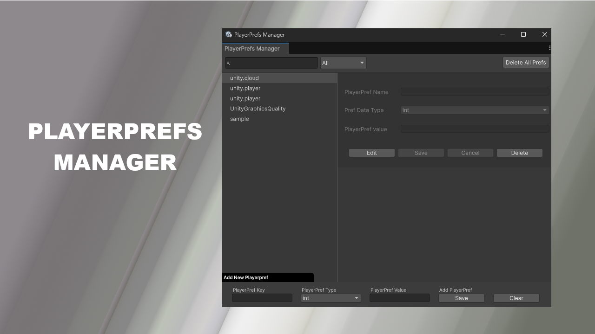

🌱 PlayerPrefs Manager
A Unity Editor extension to view, edit, add, and delete PlayerPrefs directly inside the Unity Editor. Great for debugging, testing, and tweaking saved data without sacrificing time.
🔗 View on Unity Asset Store

Unity Developer • Tool Creator • Asset Store Publisher
A Unity Editor extension to view, edit, add, and delete PlayerPrefs directly inside the Unity Editor. Great for debugging, testing, and tweaking saved data without sacrificing time.
🔗 View on Unity Asset Store